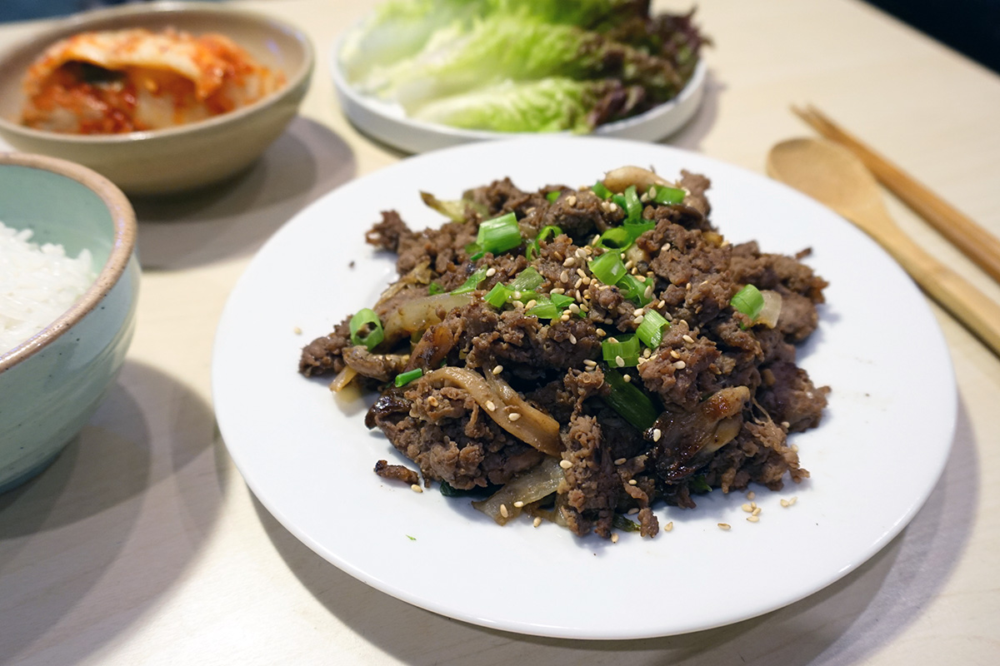

Introduction
Bulgogi is a South Korean marinated BBQ beef dish. I chose it because it tastes good, and it's fun to make. It's also pretty simple to make, as all you have to do is marinate it and be careful not to burn it.
Ingredients

- 700g (1½ lb) boneless ribeye steak
- Half a small pear, skinned and coarsely grated
- ¼ cup (62.5mL) soy sauce
- 2 tbsp (30mL) brown sugar
- 2 tbsp (30mL) toasted sesame oil
- 3 minced cloves of garlic
- 1 tbsp (15mL) grated ginger
- 1 tbsp (15mL) gochujang
- 2tbsp (30mL) vegetable oil, divided (2 x 15mL)
- 2 thinly sliced green onions
- 1 tsp (5mL) toasted sesame seeds
Instructions
- Wrap steak in plasic wrap, then place in freezer for 30mins. Unwrap and slice across the grain with 6mm slices.
- Combine pear, soy sauce, brown sugar, sesame oil, garlic, ginger and gochujang in a medium-sized bowl.
- Combine soy sauce mixture and steak in a 4L Ziploc bag and marinate for at least 2 hours or overnight, turning the bag occasionally.
- Warm up 15mL vegetable oil in a cast iron grill pan on medium-high heat. In batches, add one layer of bulgogi at a time and cook, flipping once until charred and cooked through. This should take about 2-3 minutes on each side. Repeat, using the last 15mL of your oil.
- Serve immediately, optionally garnishing with green onions and sesame seeds.